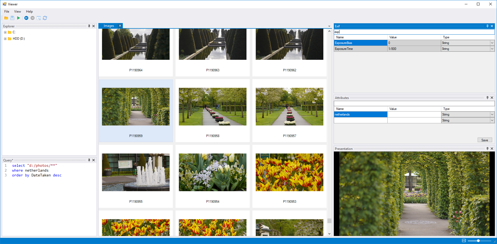

Multifilter Image Viewer
Viewer is a program that lets you store key/value pairs directly into JPEG files. Tagged files can then be searched using a custom SQLike query language. Since all tags are stored directly in the JPEG files, you can freely move files (even between 2 computers) without losing any tags.
Download for Windows
pre-release version 1.0.0-alpha.4

User manual
- Installation TBD
- UI overview
- Query language